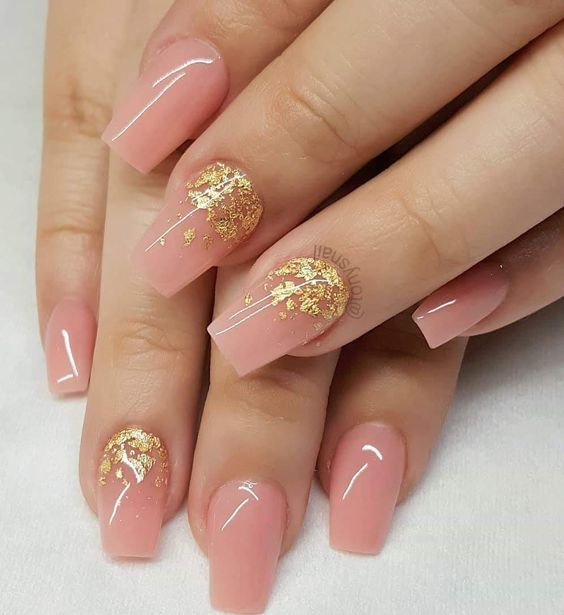
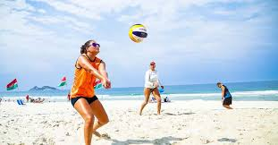
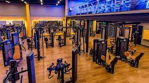

Fernanda
Aluna Sesi Senai
hobbies
sobre unhas
Fazer as unhas é um ritual de autocuidado que muitas de nós adoramos! É um momento para relaxar, se cuidar e, claro, dar um toque especial ao visual. Seja uma esmaltação clássica, nail art criativa ou uma manicure impecável, cada detalhe conta. Além de deixar as unhas lindas, essa prática pode ser uma forma de expressão e criatividade. Então, que tal reservar um tempinho na agenda para cuidar das suas unhas e se sentir ainda mais confiante? Afinal, unhas bem-feitas são sempre um charme!
sobre volei
O vôlei é um esporte dinâmico e emocionante, que combina habilidade, estratégia e trabalho em equipe. Jogar vôlei oferece uma série de benefícios físicos e mentais. O jogo melhora a resistência cardiovascular, a coordenação motora e a força muscular, especialmente nos braços, pernas e core.O vôlei é uma atividade física excelente para a saúde, pois promove o exercício cardiovascular, melhorando a resistência do coração. Ao envolver movimentos variados, fortalece músculos dos braços, pernas e core, além de aprimorar a coordenação e a agilidade. Essa prática também ajuda na queima de calorias, contribuindo para a manutenção do peso e a redução de gordura corporal, e aumenta a flexibilidade através de saltos e mudanças rápidas de direção.Além dos benefícios físicos, o vôlei proporciona vantagens mentais, como a redução do estresse e da ansiedade, graças à liberação de endorfinas que melhoram o humor. Jogar em equipe favorece a socialização e o desenvolvimento de habilidades de comunicação, tornando o vôlei não apenas uma forma eficaz de se exercitar, mas também uma maneira divertida de interagir com outras pessoas. 
sobre Academia
A academia é um espaço dedicado à prática de atividades físicas, onde as pessoas podem se exercitar e cuidar da saúde. Com uma variedade de equipamentos, como pesos, máquinas e acessórios, a academia oferece oportunidades para fortalecer o corpo, melhorar a resistência cardiovascular e aumentar a flexibilidade.Além dos benefícios físicos, como tonificação muscular e controle de peso, a academia também é um ambiente propício para aliviar o estresse e melhorar o bem-estar mental. Muitas academias oferecem aulas em grupo, como yoga, pilates e spinning, que promovem socialização e motivação entre os participantes.A rotina de treinos na academia pode ser adaptada às necessidades e objetivos individuais, seja para ganhar massa muscular, emagrecer ou apenas manter-se ativo. Assim, a academia se torna um aliado valioso na busca por uma vida saudável e equilibrada.
